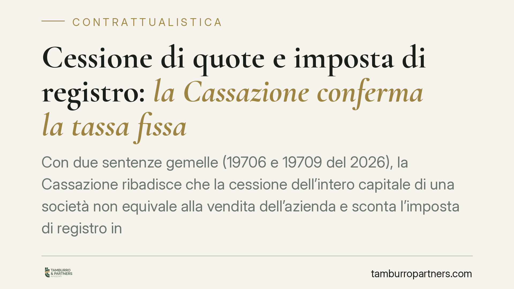

Cessione di quote e imposta di registro: la Cassazione conferma la tassa fissa
Con due sentenze gemelle (19706 e 19709 del 2026), la Cassazione ribadisce che la cessione dell'intero capitale di una società non equivale alla vendita dell'azienda e sconta l'imposta di registro in misura fissa. Chiuso anche il fronte dell'abuso del diritto per le operazioni conferimento-cessione sorrette da ragioni economiche concrete. Una conferma rilevante per chi pianifica il passaggio di partecipazioni.

Il fatto
L'Agenzia delle Entrate, in diversi contenziosi, aveva contestato la tassazione applicata alla cessione totalitaria di quote societarie. La tesi dell'ufficio: cedere il 100% delle partecipazioni equivale, nella sostanza economica, a cedere l'azienda. Da qui la pretesa di applicare l'imposta di registro proporzionale (3% sul valore dei beni trasferiti) anziché quella fissa prevista per il trasferimento di quote.
In un secondo filone, l'Agenzia aveva qualificato come abuso del diritto lo schema "conferimento d'azienda in una newco seguito dalla vendita delle quote", ritenendolo un percorso artificioso per ottenere un risparmio d'imposta.
La Cassazione ha respinto entrambe le ricostruzioni.
Inquadramento normativo
Il nodo è l'art. 20 del DPR 131/1986 (Testo unico dell'imposta di registro). La norma impone di tassare l'atto in base agli effetti giuridici che produce, considerando l'atto presentato alla registrazione, senza attingere a elementi esterni o a collegamenti con altri negozi.
La formulazione attuale della disposizione, dopo gli interventi del legislatore del 2017-2018, esclude che l'imposta di registro possa fondarsi sulla "sostanza economica" complessiva dell'operazione. In altri termini, l'atto di cessione di quote resta cessione di quote: non può essere riletto come cessione d'azienda sommando effetti di negozi diversi.
Sul versante dell'abuso, opera invece l'art. 10-bis della L. 212/2000 (Statuto del contribuente). La norma considera abusive le operazioni prive di sostanza economica che realizzano essenzialmente vantaggi fiscali indebiti. Ma lo stesso articolo chiarisce che non è abusiva l'operazione giustificata da valide ragioni extrafiscali, non marginali, anche di natura organizzativa o gestionale.
Implicazioni pratiche
Per chi trasferisce partecipazioni, la pronuncia consolida un punto fermo. La cessione totalitaria di quote sconta l'imposta di registro in misura fissa (200 euro), non quella proporzionale. L'ufficio non può "saltare" lo schermo societario per tassare come se fosse stata venduta l'azienda sottostante.
Attenzione però al perimetro. La Cassazione non autorizza qualsiasi operazione: valida lo schema quando esistono ragioni economiche reali e documentabili. La differenza tra pianificazione lecita e abuso non sta nella forma giuridica scelta, ma nella presenza di una logica imprenditoriale diversa dal mero risparmio fiscale.
Nello schema conferimento-cessione, il punto decisivo diventa quindi la tracciabilità delle motivazioni: riorganizzazione del gruppo, separazione di rami d'attività, ingresso di nuovi soci, esigenze di governance. Chi non è in grado di dimostrarle resta esposto alla contestazione, nonostante l'orientamento favorevole.
Cosa fare in concreto
- Documentate le ragioni extrafiscali dell'operazione fin dall'inizio: verbali, business plan, corrispondenza che attesti l'obiettivo organizzativo o gestionale, non solo il vantaggio fiscale.
- Verificate la coerenza temporale tra conferimento e successiva cessione: una sequenza immediata e priva di attività intermedia indebolisce la difesa.
- Distinguete nettamente l'oggetto dell'atto: una cessione di quote deve restare tale per contenuto, clausole e struttura, senza anticipare effetti tipici della vendita d'azienda.
- Conservate la perizia di stima e la documentazione sul valore delle partecipazioni, utile sia in sede di registro sia in un eventuale contraddittorio.
- Valutate preventivamente il rischio con un confronto tecnico prima di perfezionare l'operazione, non dopo l'avviso di accertamento.
Un punto di equilibrio
Le due sentenze non introducono novità rivoluzionarie, ma rafforzano la linea che distingue il profilo civilistico-fiscale dell'atto dalla sua rilettura economica. Per il contribuente è un presidio di certezza: la forma giuridica scelta conta, purché sia reale e sorretta da sostanza.
Resta però il versante più delicato, quello dell'abuso. Qui la tutela non è automatica: dipende dalla capacità di dimostrare che l'operazione ha una ragione d'essere al di là del risparmio d'imposta. È su questo terreno che si gioca la tenuta effettiva della pianificazione.
Disclaimer
Contributo informativo a cura di Tamburro & Partners - Avv. Giuseppe Tamburro. Non costituisce parere legale.
Ogni contratto ha il suo equilibrio.
Se vuoi una revisione delle clausole o una redazione su misura, scrivi allo studio. Ti rispondiamo entro un giorno lavorativo.